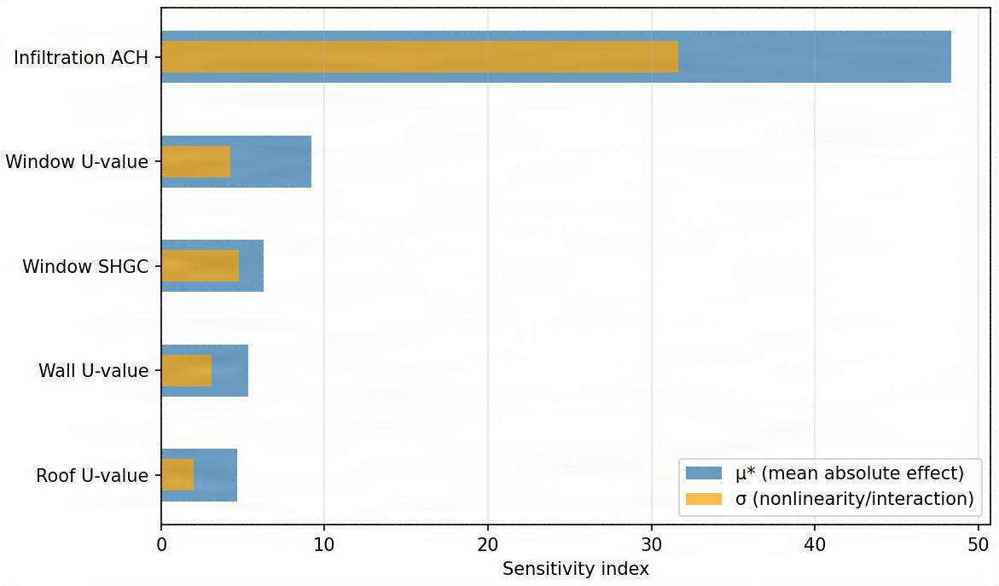
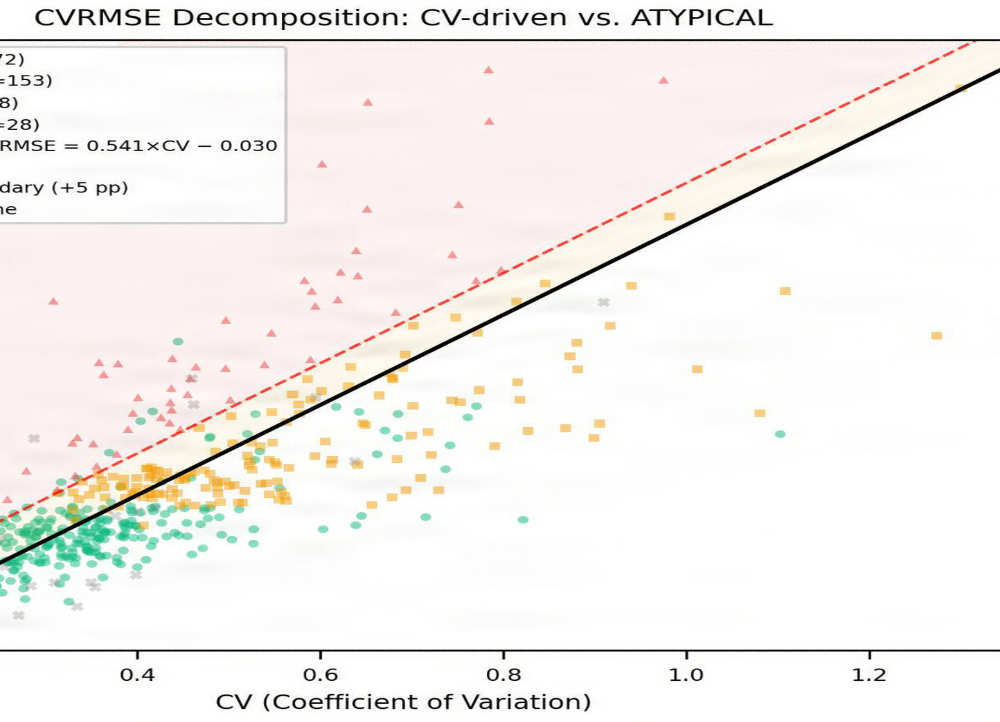
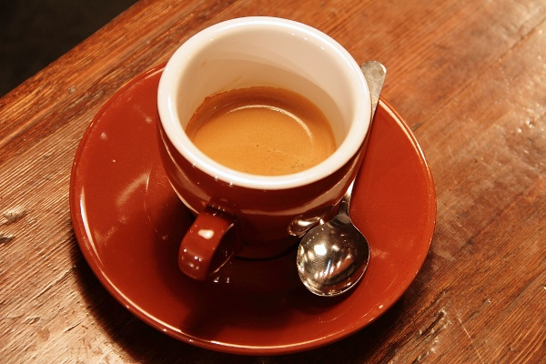
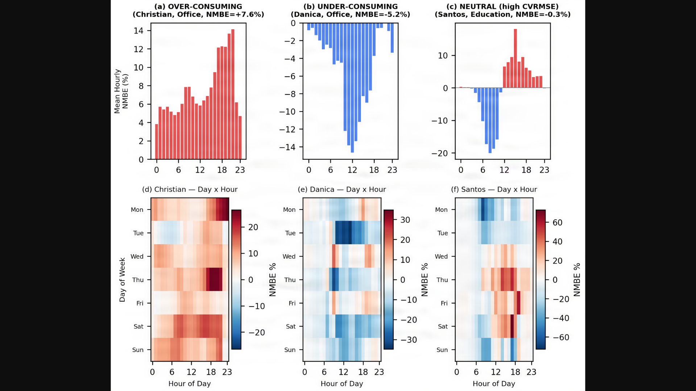
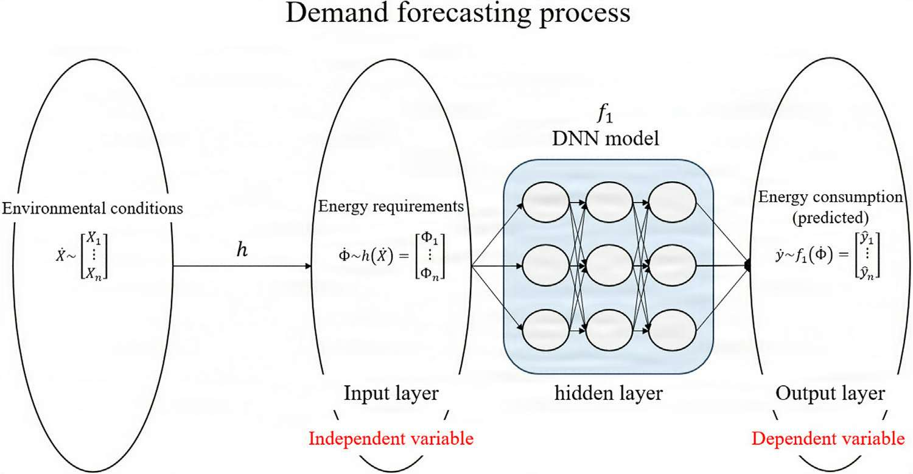
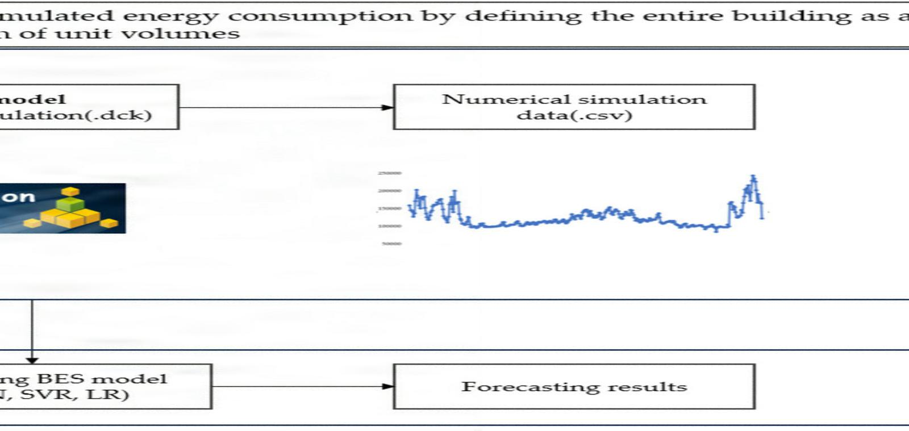
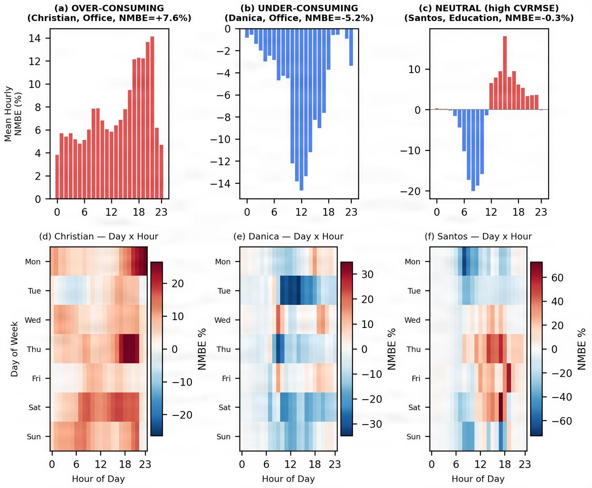
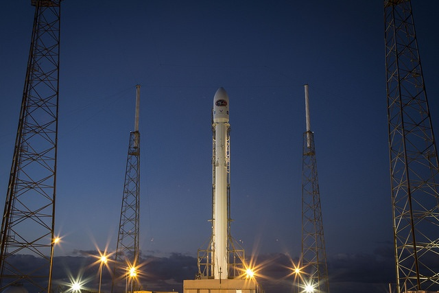

자동 발견
출처증명은 증명서를 붙이는 것만으로는 쓸모가 적습니다. 저작권 침해는 피해자가 알아차려야 대응이 시작되기 때문입니다. 이 페이지는 순찰기가 웹 페이지를 돌며 연구실 그림이 어디서 어떻게 쓰이고 있는지 자동으로 찾아낸 결과입니다.
그림 순찰 2026-11-14T01:12:28+0900 · 페이지 3곳 · 이미지 9장 · 우리 그림 6건 중 6건 발견 · 상관없는 이미지 3장 중 잘못 걸린 것 0건
자료실(음원·영상·문서) 판정 2026-11-15 23:08(그림 순찰 뒤에 추가된 페이지라 따로 실행) · 우리 파일 3건 중 3건 발견 · 상관없는 파일 1개 중 잘못 걸린 것 0건
표본이 작아 false positive rate 추정은 아닙니다.
| 페이지 | 이미지 | 실제로 한 일(정답) | 순찰기 판정 | 찾아낸 원본 |
|---|---|---|---|---|
| blog |  | JPEG 재압축 품질 74 (WAVES 0.2) | 찾음 다시 저장·압축됨(perceptual hash 거리 0); watermark GEL-0005 확인 | 외피 변수별 민감도 지수 |
| blog |  | crop 면적 0.8 (WAVES 0.4) | 찾음 watermark GEL-0001 확인 | CVRMSE 분해: 변동계수 요인과 비정형 요인 |
| blog |  | 상관없는 이미지(CC0) | 매칭 없음(정상) | |
| forum |  | 브라우저 화면 캡처 1920×1080 | 찾음 watermark GEL-0002 확인 | assets/journey/0-published.png |
| forum |  | JPEG 재압축 품질 58 (WAVES 0.4) | 찾음 다시 저장·압축됨(perceptual hash 거리 0); watermark GEL-0006 확인 | 수요 예측 과정 |
| forum | 상관없는 이미지(퍼블릭 도메인) | 매칭 없음(정상) | ||
| news |  | crop 면적 0.6 (WAVES 0.8) + JPEG 품질 74 | 찾음 잘라 쓰거나 돌려 씀 — 원본에 맞춰 되돌린 뒤 watermark 확인(특징점 173/1029개 일치, 블록 DCT z 6.7, TrustMark GEL-0008) | BES 모델 구성과 보정 절차 |
| news |  | 받는 사람 B의 사본이 재압축되어 유출 | 찾음 다시 저장·압축됨(perceptual hash 거리 0); watermark RCV-B002: 자료 요청자 B에게 보낸 사본 | 건물 유형별 시간대 오차 패턴 |
| news |  | 상관없는 이미지(퍼블릭 도메인) | 매칭 없음(정상) | |
| media | media-1.mp3 | 음원을 MP3 32kbps로 다시 압축 | 찾음 음원 지문 BER 0.034 근거: ledger 대조: 음원 지문(Philips) | 합성 선율 10초 |
| media | media-2.mp4 | 영상을 좌우 반전해 다시 인코딩 | 찾음 영상 지문 질의측 1.00 (좌우 반전) 근거: ledger 대조: 영상 지문(vPDQ) | 발행 그림 3장 슬라이드 6초 |
| media | media-3.docx | docx를 앞부분 지우고 다른 프로그램으로 다시 저장 | 찾음 본문 지문 포함도 1.00 근거: ledger 대조: 문서 지문(MinHash 포함도) | 2회차 과제 중간 보고 (DOCX) |
| media | media-4.pdf | 상관없는 문서(ledger에 없는 우리 다른 문서) | 매칭 없음(정상) |


순찰 대상은 실습용으로 만든 가짜 재게시 페이지입니다(목록). 순찰기는 robots.txt를 지키고 요청 사이에 간격을 둡니다. 처음 판(11-13)은 크게 자른 뒤 다시 압축한 그림 1건을 놓쳤습니다. 지금은 앞 단계에서 못 찾으면 특징점으로 후보 원본을 고르고, 원본에 맞춰 되돌린 뒤 watermark를 읽어 확인합니다(블록 DCT 키는 비공개라 발행자 쪽에서만 할 수 있는 단계).
무엇이 되고 무엇이 안 되나
| 되는 것 |
|
|---|---|
| 안 되는 것 |
|
| 실제 서비스 |
|